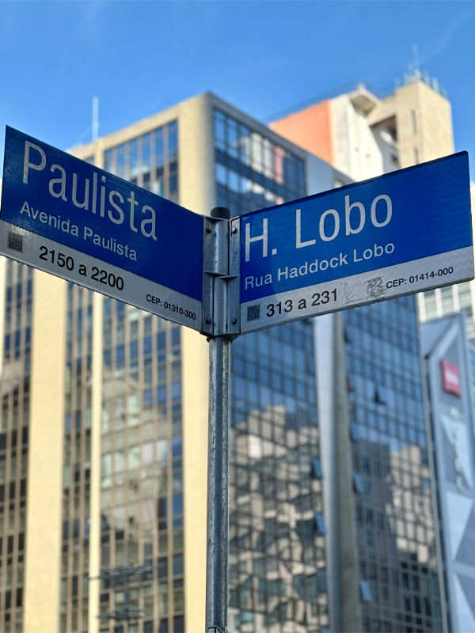

Profilaxia e prevenção
Cuidados essenciais para manter a saúde bucal em dia e acompanhamento constante.
Atendimento odontológico próximo à Avenida Paulista.
Nossa atuação
Da prevenção aos tratamentos restauradores, a Bacic Odontologia reúne diferentes áreas da odontologia para orientar cada paciente de forma individualizada.
Cuidados essenciais para manter a saúde bucal em dia e acompanhamento constante.

Prevenção e tratamento das estruturas de suporte e da saúde periodontal.

Restaurações para recuperar função, conforto e estética natural.

Procedimento indicado após avaliação criteriosa da saúde de dentes e gengivas.

Reabilitação total ou parcial para devolver segurança ao sorrir e mastigar.

Atendimento humanizado para quem necessita de cuidados fora do consultório.

Tratamento de canal focado no alívio da dor e preservação dental.

Procedimentos clínicos com planejamento, biossegurança e condução cuidadosa.

Reposição dentária moderna com técnicas consolidadas e planejamento individual.

Busca pelo equilíbrio facial com indicação técnica, clínica e responsável.

Metodologia
A odontologia integrada permite olhar para a saúde bucal de forma mais completa. Na Bacic, a avaliação considera suas queixas, sua rotina, sua saúde geral e as reais possibilidades de sucesso clínico.
Tempo para ouvir seu histórico, entender desconfortos e mapear prioridades.
Explicações técnicas em linguagem simples, com transparência em cada etapa.
Plano de manutenção preventiva com foco em longevidade e bem-estar bucal.
Sua jornada
Transformamos a experiência da consulta em algo claro, elegante e confortável, desde o primeiro contato até o acompanhamento pós-atendimento.
O agendamento acontece por WhatsApp com linguagem simples, resposta objetiva e acolhimento desde a primeira conversa.
Cada caso é observado com calma para entender contexto, prioridades clínicas e as melhores possibilidades de cuidado.
Você entende o que será feito, por que será feito e como manter resultados com mais previsibilidade e tranquilidade.
Localizada estrategicamente na Consolação, a apenas um quarteirão da Avenida Paulista, a Bacic Odontologia Integrada foi idealizada para resgatar a essência do atendimento próximo.
Sob a responsabilidade técnica da Dra. Noedja Bacic, cada indicação é baseada em critério clínico sólido, ética odontológica e respeito ao tempo do paciente.
Nossa estrutura foi pensada para oferecer um ambiente de calma e acolhimento, contrapondo o ritmo acelerado da região da Paulista.

Diferenciais
A poucos passos da Av. Paulista, em região central, segura e de fácil acesso.
Uma abordagem cuidadosa, sem a pressa comum de grandes clínicas.
Diferentes especialidades reunidas sob a mesma filosofia de cuidado.
Indicações pautadas em critério clínico, ética odontológica e necessidade real.
Atendimento pensado para conciliar sua saúde com uma rotina corrida.
Ambiente preparado com rigor técnico para transmitir tranquilidade.
Prova social
Uma clínica premium também se constrói na percepção de quem passa por ela: atenção, honestidade, técnica e uma sensação real de acolhimento.
“Desde o primeiro contato senti calma e segurança. A consulta foi conduzida com critério, sem pressa, e tudo me foi explicado de maneira muito clara.”
“A Bacic passa uma imagem muito profissional, mas o que mais marcou foi a delicadeza no atendimento. Existe técnica, escuta e muito respeito ao paciente.”
“Gostei muito da forma transparente como as opções foram apresentadas. Saí com a sensação de que recebi uma indicação ética e realmente personalizada.”
São Paulo • Consolação
Nossa localização na Rua Luís Coelho foi escolhida para facilitar o dia a dia de quem reside, estuda ou trabalha nas imediações do maior centro financeiro da América Latina.
Consolação, São Paulo/SP

Nossa equipe está pronta para orientar o próximo passo para sua saúde bucal.
Central de ajuda